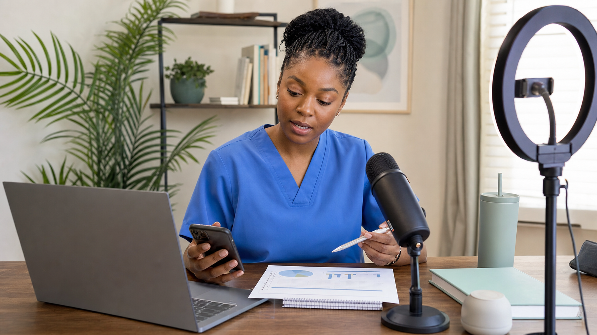

看護師の働く場所といえば、病院やクリニックを思い浮かべる人が多いでしょう。ところがアメリカには、看護師としての経験をSNS、動画、ポッドキャストなどで発信し、教育、執筆、講演、広告、商品開発へ活動を広げる「ナースクリエイター」がいます。
日本では、まだ聞き慣れない言葉かもしれません。単にフォロワーの多い看護師ではなく、看護の知識や現場経験をコンテンツに変え、病院の外にも届ける人たちです。臨床勤務を続ける複業型もいれば、コンテンツ制作や事業を主な仕事にした人もいます。
では、何を発信し、どのように収益を得ているのでしょうか。アメリカの動きから、新しいキャリアの可能性と、看護師として守るべき境界線を考えます。
ナースクリエイターは、人数や平均年収を示せるほど統計化された職業ではありません。それでも、看護師の経験を教育、広告、出版、講演、事業へつなげる活動領域は生まれています。ただし、成功例がすべての人の標準ではなく、患者プライバシー、勤務先規定、情報の正確性、広告表示を守ることが大前提です。
ナースクリエイターとは
「ナースクリエイター」は、法律で定められた資格名や職種名ではありません。英語圏でも nurse creator、nurse content creator、nurse influencer、nurse entrepreneur など、活動内容に応じてさまざまな呼び方が使われています。
Nurse.orgは2026年のBest of Nursing Awardsで、短編動画、看護専門領域、トラベルナース、ポッドキャスト、教育、ライフスタイル、コメディ、新人などのクリエイターを表彰しました。内容は教育だけでなく、看護師同士の共感、アドボカシー、ユーモア、起業まで広がっています。
大切なのは「インフルエンサーになる」ことだけをゴールにしないことです。発信は、執筆者、教育者、講師、ポッドキャスター、動画制作者、事業者へ進む入口にもなります。
アメリカではどのくらい広がっている？
正確な人数は分かりません。公的な職業分類がなく、勤務を続けながら時々投稿する人、小規模な専門アカウント、企業向け動画だけを作るUGC制作者まで、どこからをナースクリエイターと数えるか決まっていないためです。「全米に何万人」と断定できる信頼性の高い統計は確認できませんでした。
一方、活動の土台となる健康・ウェルネス発信の市場は大きくなっています。Pew Research Centerは、米国向けに健康・ウェルネス情報を発信し、主要SNSのいずれかで10万人以上のフォロワーを持つ人など6,828人を分析しました。41％が、医師や看護師を含む何らかの医療専門職を名乗っていました。ただし、看護師だけの人数は公表されていません。
同調査では、米国成人の40％、50歳未満では約半数が、SNSの発信者やポッドキャストから健康・ウェルネス情報を得ると回答しています。ナースクリエイターの人口は数えられなくても、情報を受け取る側の需要があることは分かります。
健康・ウェルネス発信者6,828人は、ナースクリエイターの人数ではありません。フォロワー10万人未満の発信者も含まれないため、市場の周辺を示す参考値として扱います。
ナースクリエイターは何を発信している？
| ジャンル | 主な内容 | 主な読者 |
|---|---|---|
| 看護教育 | 病態、薬剤、試験対策、学習方法 | 看護学生、新人看護師 |
| キャリア | 就職、転職、勤務形態、進学 | 看護学生、看護師 |
| 専門領域 | ICU、ER、産科、小児、精神、美容など | 同業者、一般の人 |
| 共感・ユーモア | 夜勤、人間関係、燃え尽き、看護あるある | 医療従事者 |
| 健康・生活 | セルフケア、メンタルヘルス、料理、育児、美容 | 一般の人 |
| アドボカシー | 労働環境、看護政策、障害、医療格差 | 看護師、社会一般 |
看護師資格を「発信内容そのもの」に使う人もいれば、発信者の背景として生かす人もいます。元NICU看護師のHelena Faustin氏は、料理を中心とする「That Nurse Can Cook」を展開し、書籍などへ活動を広げました。ナースクリエイターは医療解説者だけではありません。
ナースクリエイターはどうやって収益を得ている？

多くの人が気になるのが収益です。SNSの再生回数だけで生活しているとは限らず、成功例ほど複数の収益源を組み合わせています。
- スポンサー投稿：スクラブ、シューズ、学習サービス、ウェルネス製品などを紹介する
- 広告収入：YouTubeなど、プラットフォームの条件を満たして再生に応じた収益を得る
- アフィリエイト：専用リンクやコードを通じた購入に対して報酬を得る
- UGC制作：自分のアカウントではなく、企業が広告や公式SNSで使う動画を作る
- 教材・講座：試験対策、看護教育、キャリア支援などを有料で提供する
- 執筆・出版：書籍、記事、ニュースレターなどへ活動を広げる
- 講演・イベント：学校、カンファレンス、企業研修などへ登壇する
- 会員制サービス：コミュニティやサブスクリプションを運営する
- 自社事業：看護用品、アパレル、教育・キャリアサービスなどを立ち上げる
UGCは、フォロワー数よりも「企業が使える動画を作れるか」が重視される仕事です。一方、スポンサー投稿では、視聴者との信頼、専門領域との相性、反応の質などが契約に影響します。SNSは収益そのものというより、仕事や顧客と出会う入口になる場合があります。
米国FTCは、報酬、無料提供、割引などブランドとの重要な関係がある場合、読者が見落としにくい位置へ明確に表示するよう求めています。動画では説明欄だけでなく、動画内でも分かるようにすることが推奨されています。
どのくらい稼げる？平均年収では語れない現実
ナースクリエイター限定の平均年収や中央値は確認できません。収入がほとんど発生しない人から、看護師給与を超える人、会社やブランドを経営する人まで差があります。
クリエイター市場全体でも報酬は上位へ集中しています。CreatorIQによる2025年の分析では、上位10％が報酬総額の62％、上位1％が21％を得ていました。1キャンペーン当たりの平均報酬は11,400ドルでしたが、中央値は3,000ドルです。これは看護師限定の数字でも年収でもありませんが、少数の大型案件が平均を押し上げる構造を示しています。
米国のクリエイター向け広告費は拡大しており、IABは2025年に370億ドル、2026年に440億ドルと予測しています。しかし、市場全体が成長しても、一人ひとりへ安定収入が保証されるわけではありません。撮影機材、編集時間、契約交渉、確定申告、アルゴリズム変更、案件の途切れといった負担もあります。
個別の成功例は可能性を示しますが、再現性の証明ではありません。「フォロワーを増やせば看護師給与を超えられる」と考えるのは危険です。
看護師だからこそ、発信には重い責任がある
SNSでは、アメリカの看護師が病院らしい場所で撮影している動画も見かけます。しかし、アメリカなら勤務中の院内を自由に撮影できる、という意味ではありません。
American Nurses Association（ANA）は、患者の写真や動画を投稿しないこと、勤務先のSNS規定を理解すること、職場から無差別に投稿しないことを呼びかけています。患者名や顔を出さなくても、病状、時期、地域、背景などの組み合わせで特定される場合があります。画面の端に患者、家族、カルテ、ホワイトボード、名札が映り込む可能性もあります。
病院に見える動画でも、自宅やスタジオでの再現、医療施設風セット、勤務先が管理する広報撮影などの可能性があります。外から見ただけで撮影条件は判断できません。
NCSBNも、看護師には患者のプライバシーと秘密を守る法的・倫理的責任があり、不適切な投稿は勤務先からの処分だけでなく、州のBoard of Nursingによる調査や免許への影響につながる可能性があると示しています。
投稿前に確認したい5つの境界線
- 患者情報：写真だけでなく、音声、会話、病状、時期、背景から特定されないか
- 勤務先：撮影場所、制服、名札、院内資料が規定に反していないか
- 情報の根拠：体験談と一般化できる医療情報を分け、誇張していないか
- 個別相談：一般的な情報提供と、診断・治療の助言を混同していないか
- 利益相反：広告、提供、アフィリエイトなどの関係が明確か
日本でもキャリアの選択肢になる？
日本にも、看護教育、キャリア、美容、暮らしなどを発信する看護師はいます。ただ、看護師個人の発信を仕事として評価する仕組みはまだ多くなく、「専門職が広告収入を得ること」や「看護師が目立つこと」への抵抗感も考えられます。
日本看護協会は、勤務先で撮影した写真や動画に、患者、家族、氏名などが偶然映り込む危険を具体的に示しています。これはアメリカと共通する問題です。日本だけが厳しく、アメリカなら自由という単純な違いではありません。
日本で考えるなら、院内撮影を活動の前提にする必要はありません。自宅での解説、音声配信、文章、イラスト、一般化した学習コンテンツ、勤務先と無関係なライフスタイル発信など、患者情報から距離を置いた方法があります。
最初から専業を目指すより、誰に何を届けたいかを決め、勤務先の就業規則とSNS規定を確認し、本業を続けながら小さく試す方が現実的です。フォロワー数ではなく、教育、執筆、講師、広報など次の役割につながるかを見ることもできます。
まとめ：発信は、看護師の経験を病院の外へ届ける方法
ナースクリエイターは、アメリカでも人数や平均年収が明確な職業ではありません。一方で、教育、専門領域、ポッドキャスト、コメディ、広告、出版、講演、起業など、看護師の経験をコンテンツへ変える活動は確かに存在します。
収益化の方法は一つではなく、スポンサー投稿、広告、UGC、講座、執筆、自社事業などの組み合わせです。ただし、華やかな成功例の裏には収入の不安定さと、制作・契約・運営の仕事があります。
そして、発信者である前に看護師です。患者プライバシー、勤務先規定、医療情報の正確性、広告表示を守らなければ、築いた信頼を失うことにもなります。ナースクリエイターという選択肢は、病院を辞めるための近道ではなく、専門性を別の形で社会へ届けるキャリアの一つとして考えるのがよいでしょう。
参考資料・出典
- American Nurses Association：Social Media Do’s and Don’ts for Nurses
- American Nurses Association：Social Media Principles
- NCSBN：A Nurse's Guide to the Use of Social Media
- Federal Trade Commission：Disclosures 101 for Social Media Influencers
- Pew Research Center：Who Are America’s Health and Wellness Influencers?
- Nurse.org：Best of Nursing Awards 2026
- Side Hustle Pro：Helena Faustinインタビュー
- CreatorIQ：State of Creator Compensation 2025
- IAB：2025 Creator Economy Ad Spend & Strategy Report
- 日本看護協会：個人に関する情報と倫理
本記事は2026年7月18日時点で確認できる情報をもとに作成しています。ナースクリエイターは公的な職業分類ではなく、人数や平均年収を示す統計は確認できませんでした。クリエイター市場全体の数値を、ナースクリエイター固有の実績として読み替えないようご注意ください。SNS規定、広告表示、免許・守秘義務に関する判断は、勤務先、州法・各州Board of Nursingなどの最新情報をご確認ください。